Product overview and budget brief for stakeholders evaluating rollout across boutiques.
All four role-scoped portals are now live — Admin, Approver, Staff and Reader — each behind its own sign-in. Every user lands directly in the screen built for their job; nobody sees a feature they don't need.
Every roster follows the same lifecycle: draft → submitted → approved → published, with reject and amend paths and a full audit trail. One scoring engine judges both automatic generation and manual edits, so the two are always scored the same way.
Staff, VIC clients, shifts and rules are all configured per boutique in one data model. The current dataset covers two boutiques (Sydney and Melbourne); adding a third is configuration, not new engineering.
Every user signs in once and lands in the portal that matches their role — no menu of features they don't need.
Generate and edit rosters, manage staff, VIC clients, shift definitions, engine rules and leave — all scoped to the active boutique.
A focused inbox of rosters awaiting review, with approve, reject and publish — kept separate from whoever built the draft.
Employees see their own upcoming shifts straight from the published roster, no admin access required.
A read-only roster browser with one-click CSV and PDF export, for a shared back-of-house screen or printout.
Every roster — whether machine-generated or hand-built — moves through the same six steps, with a permanent record at each one.
Pick a date. The engine reads that boutique's staff, skills, VIC appointments, leave and shift rules and proposes a scored roster.
Unmet requirements and rule flags are called out per shift. Add or remove staff by hand — the score recalculates live, before anything is sent onward.
The draft leaves the admin's queue and appears in the approver's Approval Inbox, with its score and any overrides visible.
The approver — a separate role from whoever built the draft — checks it against the same detail view and decides.
If another roster is already published for that boutique and date, it's automatically marked Amended and superseded — not overwritten, not left to error out.
Every linked staff member on that roster sees the shift on their own My Schedule the moment it's published — no announcement needed.
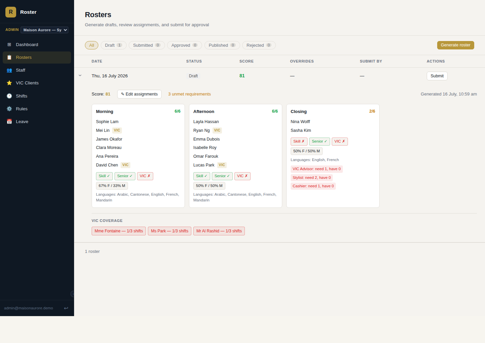
The engine reads active staff, skills, VIC appointments, leave and shift rules for the target date and proposes a complete roster — scored out of 100, with every unmet requirement (skill gaps, missing VIC coverage, understaffed shifts) surfaced immediately.
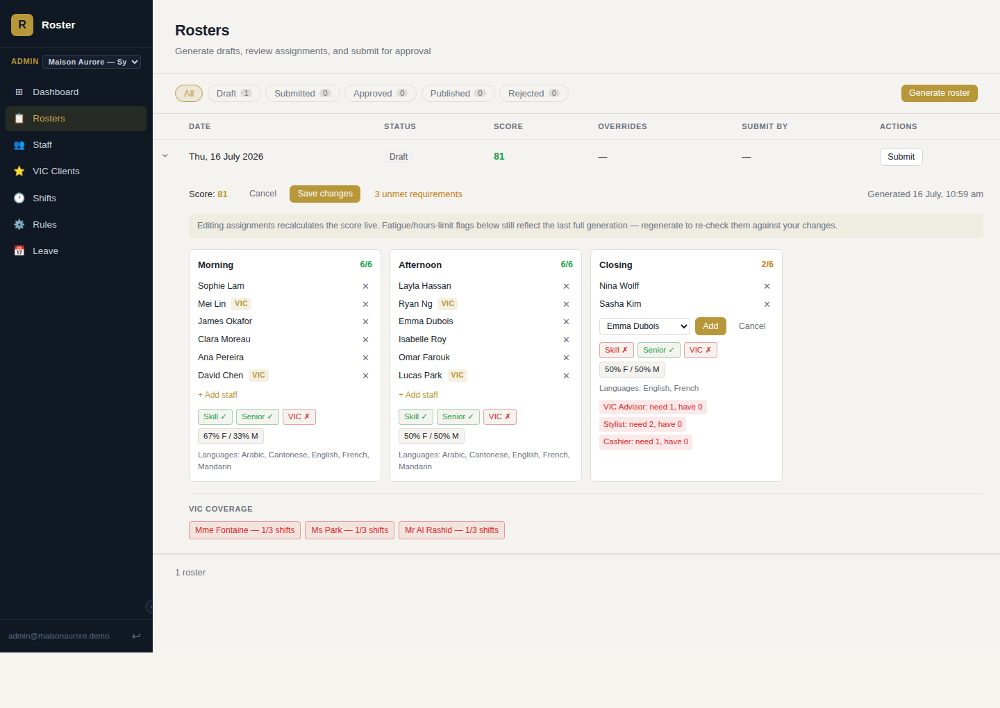
Add or remove anyone from a shift and the score, skill coverage and VIC-coverage badges recompute instantly — using the same scoring logic the generator itself uses, so a manual fix and a fresh generation are always judged the same way.
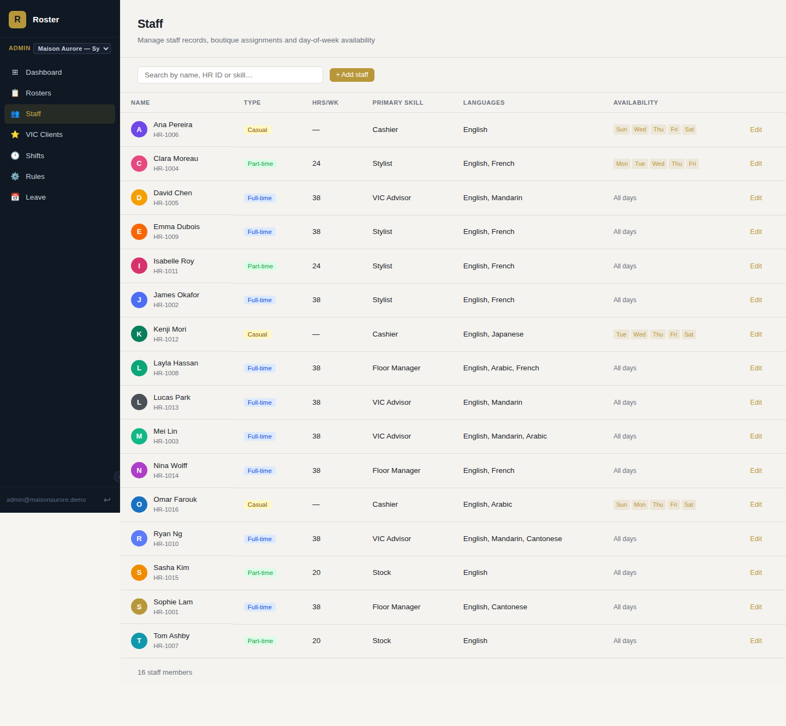
Employment type, contracted hours, seniority, languages, primary skill and day-of-week availability all live on the staff record — the same data the scheduling engine, VIC assignment and leave tracker all read from.
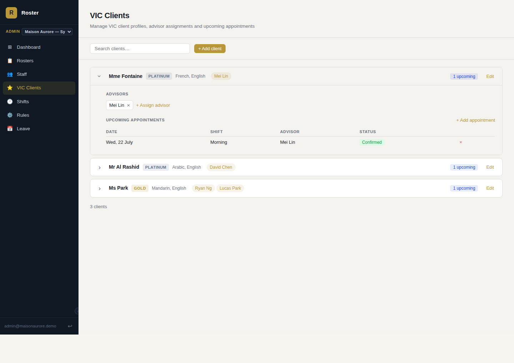
Platinum, gold and silver clients each carry preferred languages and a list of affiliated advisors — the roster engine treats an unstaffed VIC appointment as a scoring penalty, not an afterthought.
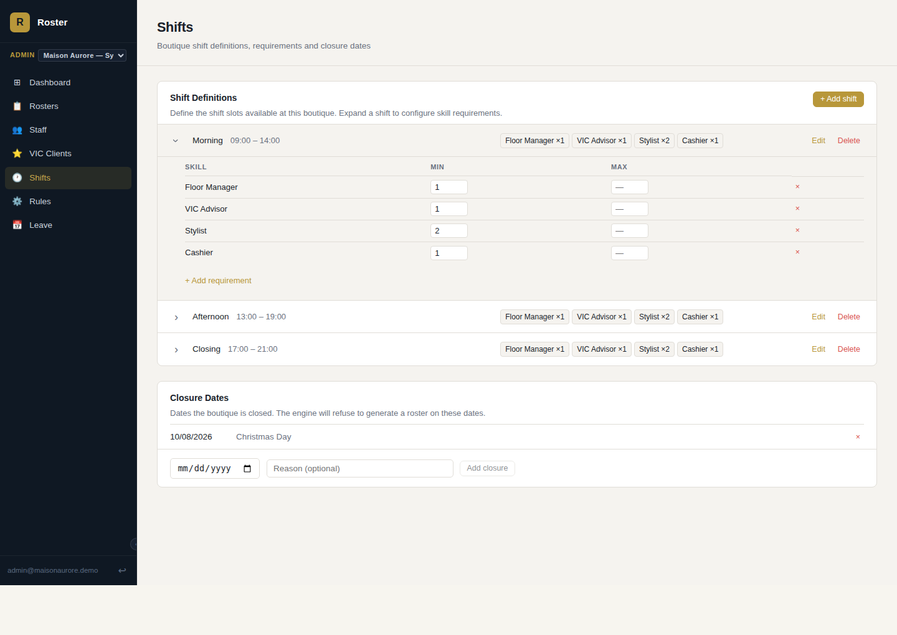
Shift times, sort order and validity windows are configured per boutique, each with its own per-skill minimum headcount — plus a closure calendar the engine refuses to schedule against.
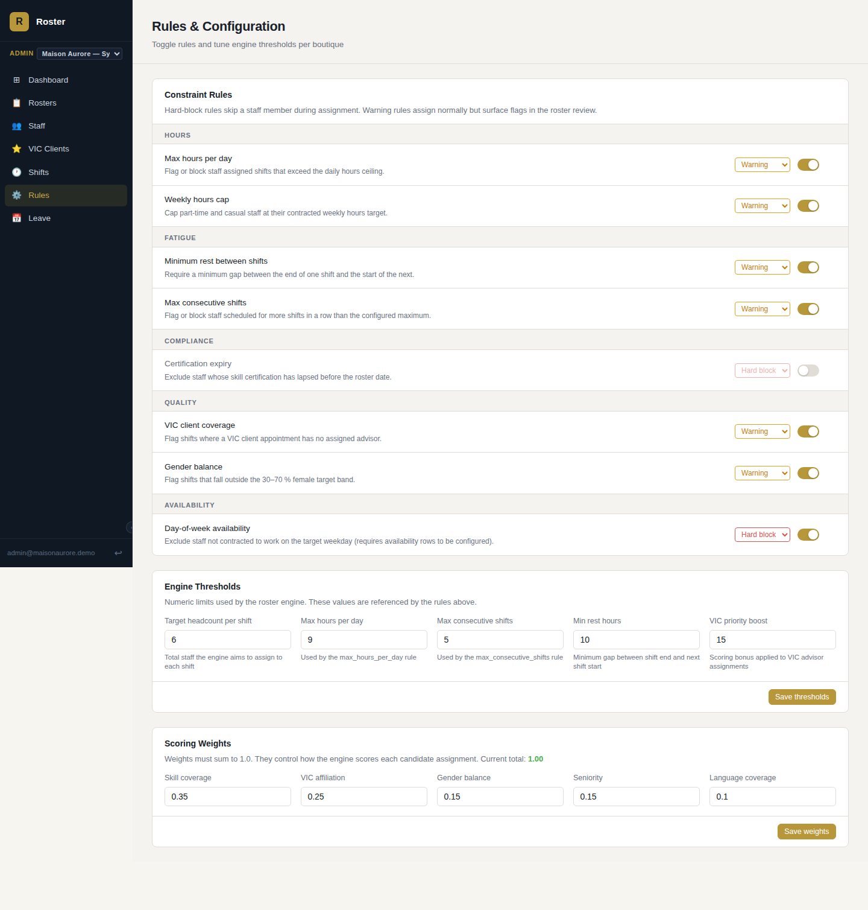
Eight constraint rules — hours, fatigue, compliance, coverage and availability — can each be switched between warning and hard-block, independently per boutique. Scoring weights and engine thresholds are equally adjustable, with the interface refusing to save weights that don't sum to 100%.
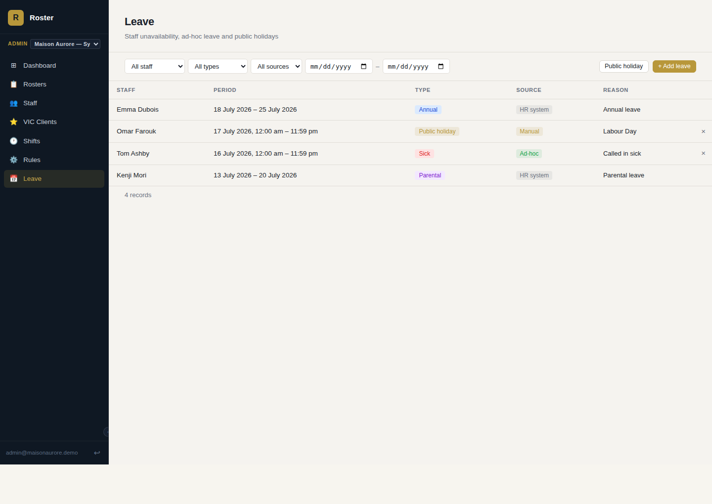
Annual, sick, parental, unpaid and public-holiday leave are tracked per staff member, tagged by source — synced from an HR system, entered ad-hoc, or added manually — and automatically exclude that person from generation on those dates.
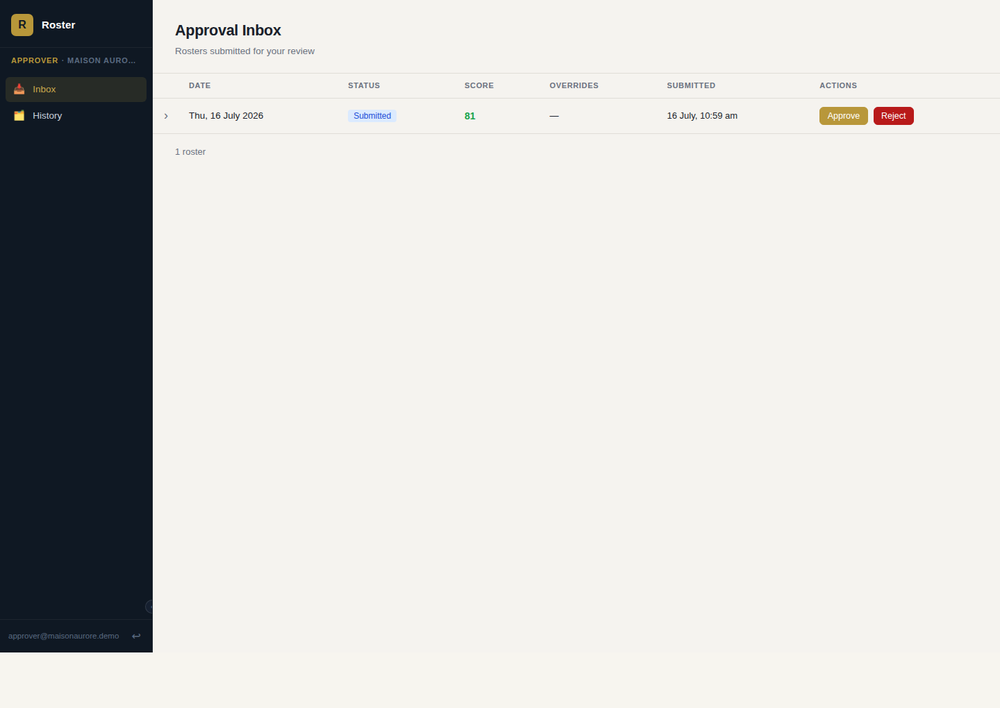
Approvers get a dedicated inbox of submitted rosters — score, overrides and full shift detail — with approve, reject (with a note back to the admin) and publish. Publishing a new roster for a date that already has one live automatically supersedes it, rather than erroring out.
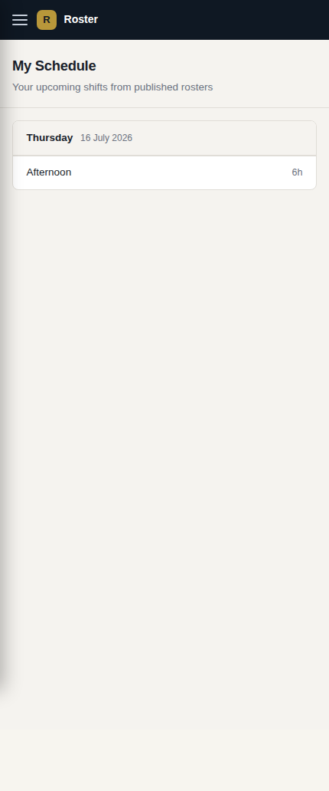
Once a roster is published, each staff member with a linked account sees their own upcoming shifts — shift name, VIC flag and duration — grouped by day, on a mobile-first layout built for checking on the go.
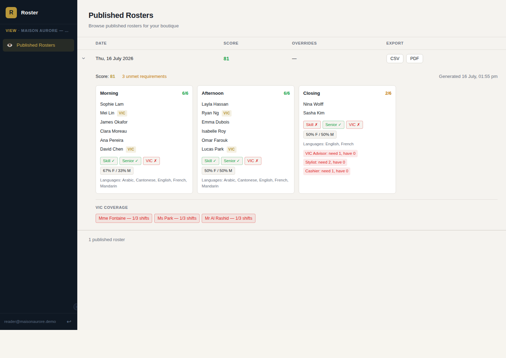
The Reader portal lists every published roster for its boutique — scoped by the same row-level security as the other portals — and expands to the identical staff-mix and rule-flag detail view admins and approvers see, minus any edit controls. Every row exports straight to CSV or a print-ready PDF.
A real run-through, captured from the app: a rostered stylist becomes unavailable after her shift is already live, and the correction goes out through the normal review path in minutes, not a scramble.
The admin adds an ad-hoc sick-leave record for today, on the spot — no spreadsheet, no group chat, and it's timestamped and attributed like every other leave record.
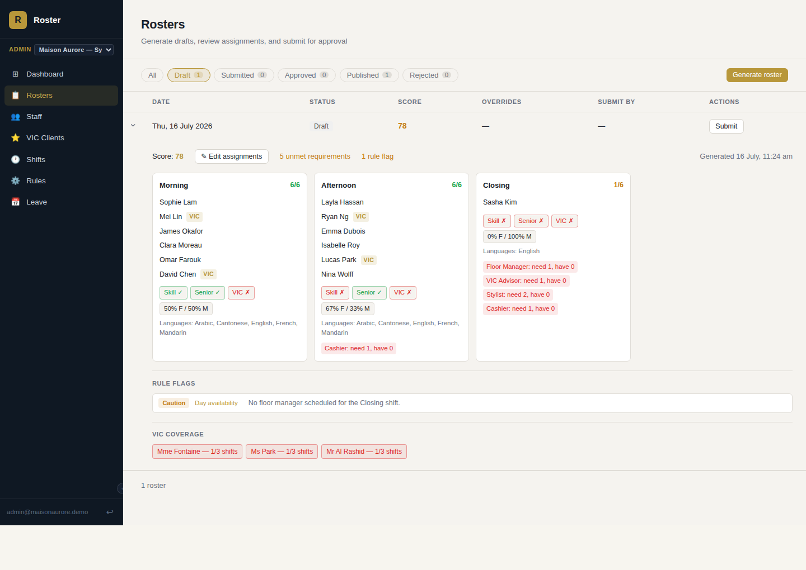
Re-running Generate for the same date automatically excludes her — the engine already treats today's leave as unavailability — and fills the shift from the bench without anyone hunting for a replacement.
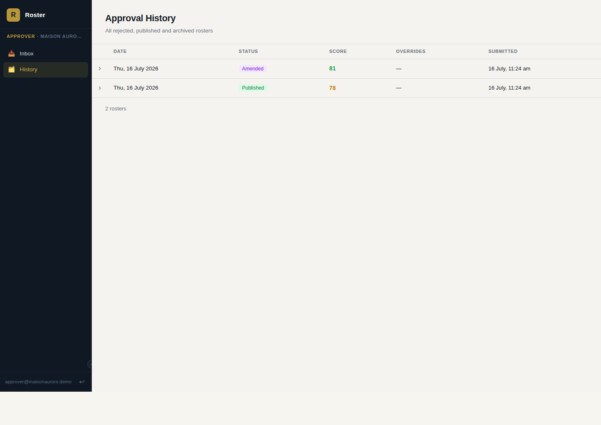
Submitted and published through the same approval step as any roster. The original goes live for staff. The record for this date now shows both.
Same day, one date, two versions, zero manual reconciliation: the corrected roster is published, the original is kept as an Amended record rather than deleted, and every staff member on the new version sees the right shift on My Schedule — the whole correction goes through the same review path as any other roster, just faster.
Framed the way a budget review usually wants it: who uses which portal, and what it replaces.
| Portal | Typical user | Replaces / reduces | Value |
|---|---|---|---|
| Admin Rosters, Staff, VIC, Shifts, Rules, Leave |
Store or regional operations admin | Manual spreadsheet rostering, side-channel leave tracking | One generation run replaces hours of manual shift-building per boutique per week |
| Approver Inbox, History |
Boutique or regional manager | Ad-hoc email/print sign-off with no audit trail | A single queue with a permanent, searchable approval record |
| Staff My Schedule |
Every floor employee | "What's my shift?" messages to the manager | Removes a constant low-value interruption from every admin's day |
| Reader Published Rosters |
Shared/back-of-house display | Printed roster taped to a wall, manual CSV exports | Always-current view, plus one-click CSV/PDF export, with no reprint cycle |
Staff, VIC clients, shifts, rules and scoring weights are all configured per boutique inside the same deployment. A regional admin already switches between boutiques from one login. Adding a store is a data-entry and configuration exercise, not a new engineering project — the marginal cost curve flattens fast as more boutiques come on board.
A few screens are intentionally stubbed for a later phase rather than rushed — worth knowing for planning purposes.
Let employees submit their own unavailability instead of going through an admin.
Let staff see the published roster for their whole boutique, not just their own shifts.
Product overview for internal budget review